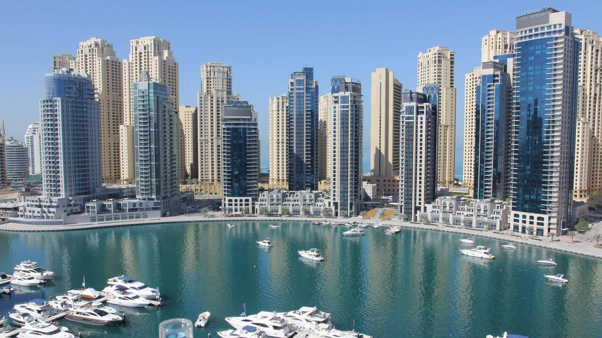

Dubaï est la ville la plus peuplée des Émirats arabes unis (EAU) et la capitale de l’Émirat de Dubaï. Établieau 18ème siècle comme petit village de pêcheurs, la ville a grandi rapidement au début du 21ème siècle dans une métropole cosmopolite avec un accent sur le tourisme et l’hospitalité. Dubaï est l’une des destinations touristiques les plus populairesau monde avec le deuxième plus cinq étoiles hôtels dans le monde, et le plus haut bâtiment dans le monde, le Burj Khalifa.
Situé dans la partie orientale de la péninsule arabique sur la côte du golfe Persique, Dubaï vise à être le centre d’affaires de l’Asie occidentale. C’est également une plaque tournante mondiale majeure de transport pour des passagers et le fret. Les recettes pétrolières ont contribué à accélérer le développement de la ville, qui était déjà un important centre commercial. Centre du commerce régional et international depuis le début du XXe siècle, l’économie de Dubaï repose sur les revenus du commerce, du tourisme, de l’aviation, de l’immobilier et des services financiers. La production pétrolière a contribué à moins de 1 pour cent du PIB de l’émirat en 2018. Selon les données gouvernementales, la population de Dubaï est estimée à environ 3 400 800 habitants au 8 septembre 2020
Dubai est l'endroit idéal pour des vacances en famille. Des plages sublimes, aux activités trépidantes de l' Aquaventure Water Park, Dubai est la destination de vacances qui réjouira toute la famille. On y trouve un nombre incalculable de magasins et le Mall of the Emirates abrite même une piste de ski et de snowboard. Et pour les familles ayant soif d'aventure, proposez à vos enfants de faire de l'escalade, de nager avec les dauphins ou de sauter en parachute ou pourquoi pas, effectuer un vol en montgolfière, en hélicoptère ou en hydravion à Dubai. Associez à cela la cuisine multiculturelle et bon marché et vous passerez à coup sûr des vacances en famille, uniques et inoubliables à Dubai !
L'émirat regorge de galeries marchandes offrant chacune une expérience et un thème différents. De par leur taille, leur architecture avant-gardiste, le large choix de boutiques de créateurs et la diversité des produits qu'ils proposent, de la haute couture aux derniers gadgets à la mode, ainsi que le choix illimité de restaurants et de cafés, pour toutes ces raisons, les visiteurs pourraient y passer la journée entière.
À côté de cela, il existe des marchés traditionnels, également appelés souks. Restaurés pour répondre aux besoins actuels, les souks de Dubai ont conservé leur architecture historique. Leur caractère et les produits qu'ils proposent peuvent varier, mais ils sont tous animés par l'agitation commerciale et ancrés dans une tradition forte et séculaire.
En outre, en janvier/février, Dubai accueille le Dubai Shopping festival (DSF), festival annuel de soldes ponctué d’innombrables animations et se déroulant dans toute la ville. C'est l'équivalent hivernal du festival Dubai Summer Surprises, qui se tient également tous les ans, l’été.
Les événements, divers et variés, constituent une part importante des divertissements de Dubai quelle que soit l'époque de l'année choisie par les vacanciers pour visiter la ville. Qu'il s'agisse des championnats de golf ou de tennis, ou des courses hippiques, les manifestations sportives sont très plaisantes à regarder et garantissent une ambiance survoltée. Des concerts et des festivals regroupant des artistes, des groupes et des musiciens internationaux sont également organisés.
Le Dubai Shopping Festival (DSF) a fortement contribué à conférer à Dubai la réputation dont elle jouit aujourd'hui dans le monde entier. À l'heure actuelle, le DSF est un événement mondial de premier plan qui ne cesse d'innover pour offrir ce qu'il se fait de mieux en matière de shopping, de bonnes affaires et de divertissement familial.
Chaque année, il attire des spectacles de renommée mondiale à Dubai, dont la plupart se jouent pour la première fois au Moyen-Orient. Le DSF met également en vedette les derniers lieux et attractions en vogues, symboles de la popularité croissante de Dubai.
Le Dubai Summer Surprises est l'équivalent estival du Dubai Shopping Festival. Pendant dix semaines, de nombreuses galeries marchandes accueillent des événements spéciaux sur des thèmes changeant toutes les semaines. Ce festival annuel a été lancé à l'été 1998 par le gouvernement Dubaiote afin de promouvoir Dubai comme destination de vacances familiales dans la région. Axé sur l'amusement, la connaissance et le divertissement des enfants pendant les vacances d'été, il attire les familles année après année.
Le Dubai Summer Surprises se déroule généralement de juin à août. À chaque semaine sa « surprise », nom donné aux thèmes en fonction des activités organisées pendant la période. Les différentes surprises sont organisées par divers ministères, en collaboration avec les centres commerciaux, les hôtels et les entreprises partenaires.
Et ce n’est pas tout, Dubai accueille aussi des compétitions sportives de renommée internationale. En voici quelques-unes des plus populaires. Vous trouverez un calendrier des autres événements sportifs dans la partie consacrée au tourisme sportif.
Ces soins séculaires, qui remontent aux temps de la Rome antique, prennent un sens nouveau à Dubai où se côtoient différents établissements haut de gamme dans des environnements aussi variés que la plage, la ville ou le désert. Vous trouverez des spas à thème mais aussi des spas de grands noms comme le spa Armani situé dans l'hôtel du même nom.
Les visiteurs n'ont que l'embarras du choix parmi toute une gamme de thèmes uniques et de soins typiques aux influences à la fois occidentales et orientales. Les thèmes marocains, égyptiens, balinais et thaïlandais font régner dans ces spas, une atmosphère très clairement internationale.
La plupart des spas proposent des produits de grandes marques comme Givenchy, La Prairie, Elemis et ESPA, tandis que certains privilégient les plantes traditionnelles. Les soins comprennent également des massages : massage aux pierres, hydrothérapie, thalassothérapie, enveloppements corporels et phytothérapie.